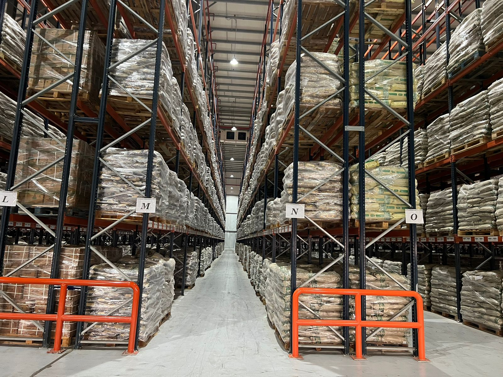
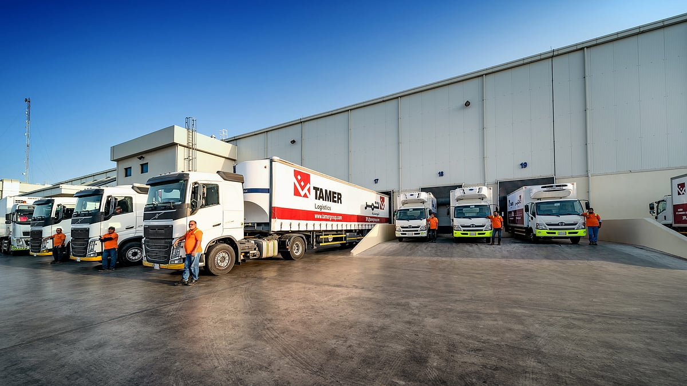
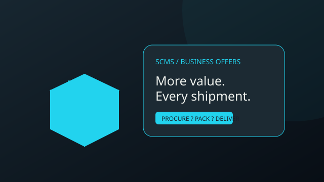

CONNECTED OPERATIONS. CLEARER DECISIONS.
SCMS – Smart Supply Chain Management System
Bring every link of your supply chain together. Manage stock, coordinate suppliers and follow shipments with clarity — from the first purchase to the final delivery.
One connected workspace. Every step accounted for.
Suppliers → Purchase Orders → Warehouses → Inventory → Customer Orders → Shipments
YOUR SUPPLY CHAIN, CONNECTED
ABOUT SCMS
Your entire supply chain, working together.
SCMS brings purchasing, storage and delivery into a connected workflow. Give your team a clear view of operations and help customers follow their orders, all from the same system.
CONNECTED ACROSS THE KINGDOM
Saudi operations. One clear view.
Coordinate Riyadh logistics hubs, Jeddah distribution centers and Dammam industrial routes. Connect warehouse operations in Jubail and Yanbu with freight moving across the Kingdom.

BUILT FOR YOUR OPERATIONS
Everything connected. Nothing overlooked.

OFFERS & PROMOTIONS
More value in every order.
Discover product offers, promotional codes and shipping promotions in your customer portal. Sign in to see available offers and their terms.
CONTACT / HELP
A clear path to getting started.
Create a customer account to explore the portal. For supplier coordination or operational assistance, contact your organization’s SCMS administrator.
How do I access SCMS?
Create a customer account or sign in with the credentials provided by your administrator.
Who can access management pages?
Management pages require sign-in and an authorized operational role. Customers have their own portal.